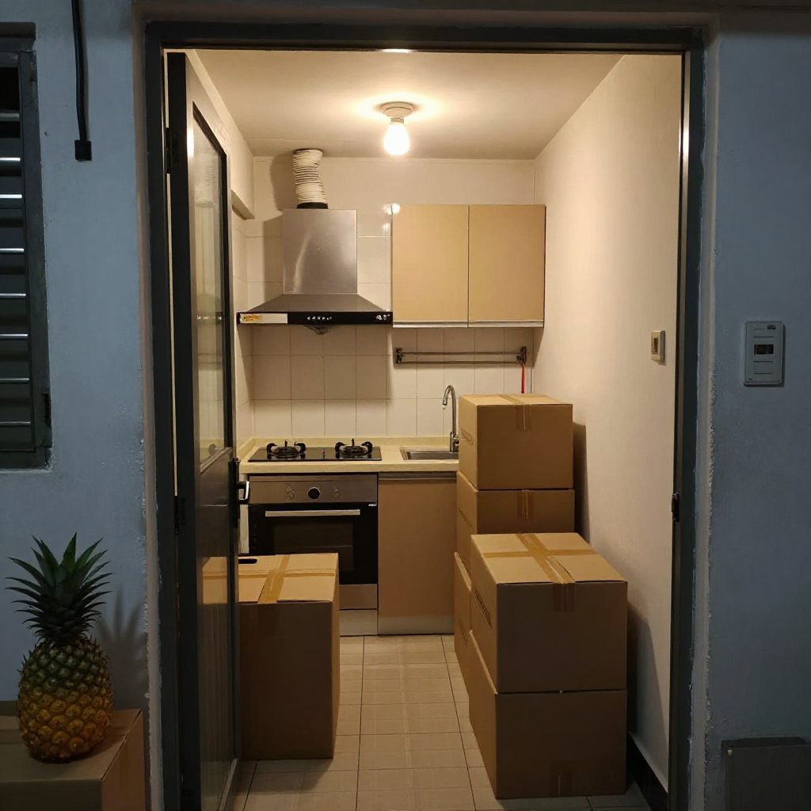
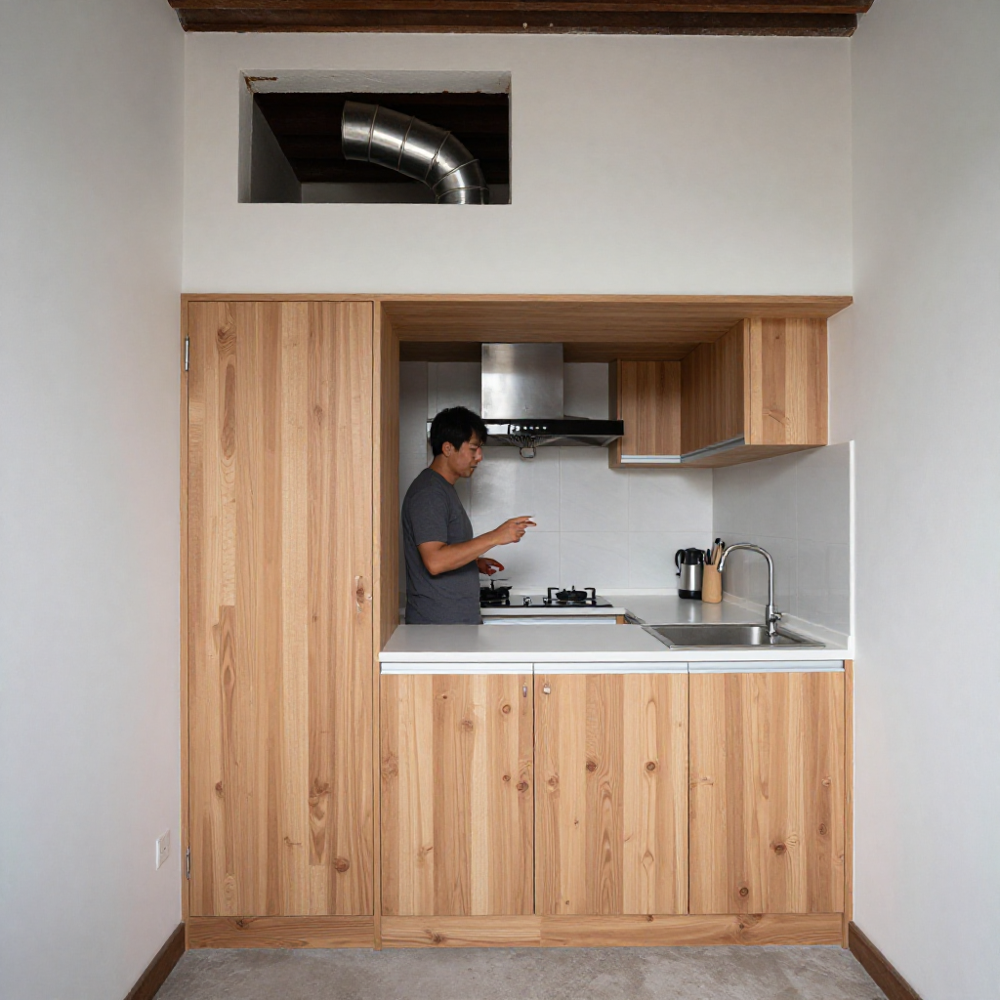
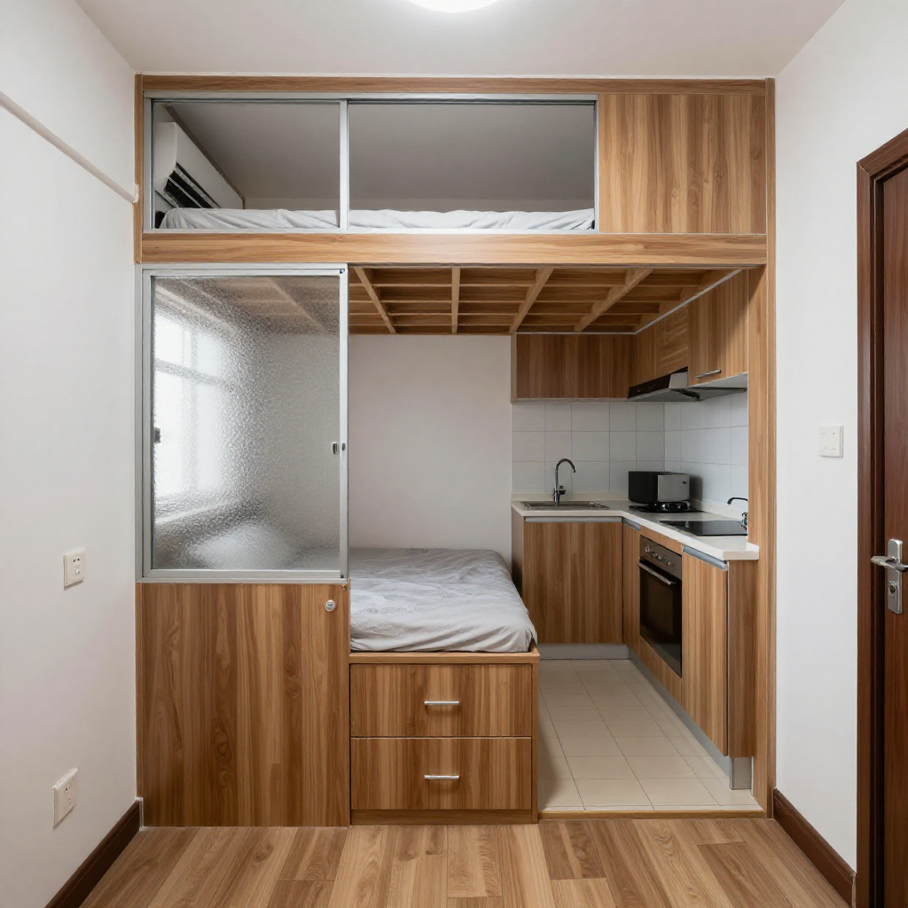
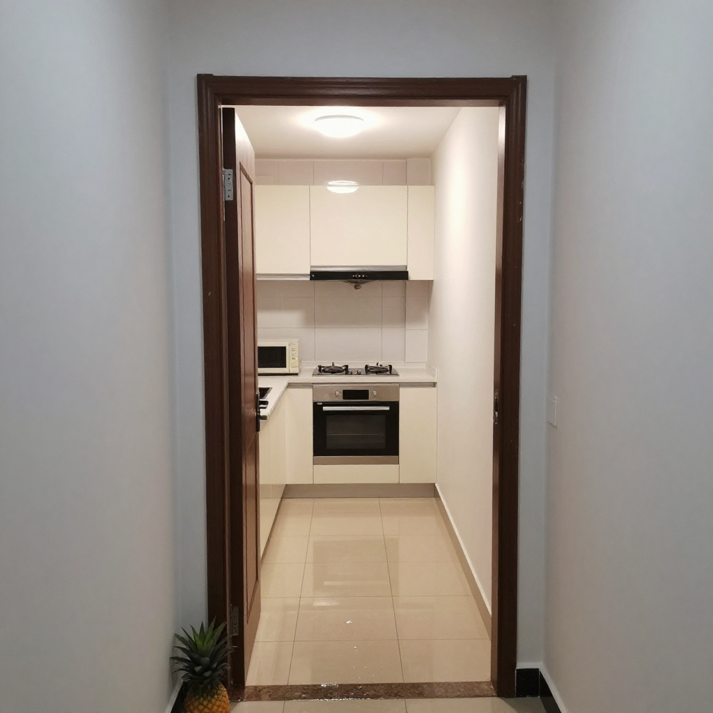

旺角唐樓入伙前一晚：張丹楓教路380呎暗廳變光、油煙機穿牆、高架床承重800kg

📍 場景：旺角砵蘭街唐樓380呎｜主講：張丹楓（8年全屋定制）｜設計溝通：雲蕾｜老師傅：阿強（30年經驗）｜WhatsApp 報價：852 5190 2328
序幕：儲咗十二年嘅首期
我係張丹楓，做咗8年裝修，專做香港小戶型定制家具。我太太雲蕾負責設計同客戶溝通，我負責工廠同現場安裝。今日呢單喺旺角砵蘭街，一栋唐樓380呎，業主周先生做物流十几年，周太喺銀行做文員，兩個仔女讀緊中學——呢層樓係佢哋儲咗十二年嘅首期，一定要住得靚。
我哋老師傅阿強今次跟埋上門，佢做咗30年，唐樓嘅暗竅佢最熟。開工嗰日我一上到去就同周生講：「周生，你呢個廳最麻煩嘅唔係細，係『暗』。窗台對正後面大廈外牆，日日晒唔到太陽。如果唔做好燈光同淺色板材，入伙之後你哋一家四口喺廳入面，成日都會覺得壓抑。」
第一幕：開放式廚房嘅抽油煙機，點穿60cm外牆？
周太鍾意煮飯，蒸魚、蒸水蛋係廣東人嘅日常。但呢棟唐樓嘅外牆厚度超過60公分——一般嘅塑膠風喉根本穿唔過去。如果抽油煙機風量唔夠或者風喉轉彎太多，回風情況會好嚴重，煮一次飯全屋都係油煙味。
「周太，你鍾意蒸嘢，抽油煙機風量起碼每分鐘一千五以上，風喉唔好轉彎超過兩個。最好直排出窗外，唔好走公共喉。」
「呢面牆60公分厚，塑膠喉穿唔到，要訂不鏽鋼硬喉，再加駁口膠封死。最後我哋喺廚房背後高位開咗個140mm圓孔，不鏽鋼蛇喉駁出去，外牆做不鏽鋼防水罩，落大雨都唔會入水。」
「師傅你講嘢真係老練，我哋銀行後生仔咩都唔識。呢個孔開完會唔會漏風漏雨？」
「唔會，玻璃膠同硅膠封兩次，再貼返外牆紙皮磚。周太你放心，呢啲嘢我哋做咗幾十年，封得實。」

第二幕：廳角高架地台，兩姐弟終於有各自嘅空間
成個單位得一間房，但兩個仔女已經十幾歲，唔可以再共處一間房。阿強同我哋最後嘅方案係：喺廳嘅一角做一個高架地台，升高40公分，底下做鞋櫃同雜物櫃，面上就係大女嘅床位。床位旁邊用磨砂玻璃同鋁框做間隔——唔係完全封死，但視覺上已經分隔開。
「師傅，咁樣做實唔實淨？兩個細路喺上面跳會唔會塌？」
「周生你睇呢度——地台龍骨用2x4杉木，每30公分一條，底板用18mm夾板，面板用12mm高密度板，再加一層防潮墊。成個地台承重超過800公斤，兩個細路跳到幾時都冇問題。」
「仲有，床底下嘅櫃我用氣壓桿鉸鏈，小朋友打開櫃門唔使扶住，唔會夾到手。呢個細節唔係所有師傅都會做，但我哋做咗咁多年，點都要為用家諗多一步。」
「OK，咁就照做。」

第三幕：入伙前一晚，兩個菠蘿旺旺
所有嘢做完嗰日係九月十五號晚黑——即係入伙前一晚。我哋喺度做最後清潔，抹地、抹櫃、抹玻璃。周太特登買咗兩個菠蘿返嚟——香港人入伙嘅習俗，菠蘿葉擺喺門口，取其「旺」嘅諧音。
「師傅，我哋住唐樓咁多年，從來冇諗過裝修可以咁細緻。以前嘅師傅做完就走，唔會同我哋解釋咁多嘢。你今晚講嘅嘢，我哋兩個都學到好多。」
「周生唔使客氣。其實裝修呢家嘢，最重要唔係幾靚，係幾『啱』。你哋一家四口，380呎，要住得落、住得好——就要靠每一寸都用得其所。我哋做咗咁多年，最希望就係業主入伙嗰日，笑容係發自內心嘅。」
「師傅，我哋有個同事下個月都準備裝修，到時介紹佢嚟搵你。」
我笑笑：「多謝周太。」喺香港做裝修，最值錢嘅唔係手藝，係口碑。

尾聲：價錢公開，你參考吓
| 項目 | 規格 | 價錢 |
|---|---|---|
| 開放式廚房吊櫃連地櫃 | E0夾板+不鏽鋼硬喉穿牆 | $14,000 |
| 磨砂玻璃鋁框隔間 | 鋁框+8mm磨砂玻璃 | $4,500 |
| 高架地台+底部儲物櫃 | 2x4杉木龍骨+氣壓桿鉸鏈 | $9,000 |
| 不鏽鋼風喉+防水罩+封膠 | 140mm圓孔+外牆防水 | $5,500 |
| 安裝+清潔 | 上門裝嵌調校清垃圾 | $3,000 |
| 總計 | $36,000 |
呢個係2026年9月報價，板材五金價會浮動。記住三句：唐樓外牆厚唔好用塑膠喉、高架地台龍骨密度決定承重、入伙習俗菠蘿葉取旺意，傳統講究要守住。
❓ 唐樓入伙三問
Q1：唐樓外牆開孔會唔會漏水？
唔會。唔鏽鋼硬喉加駁口膠封兩次，外牆再做防水罩貼返紙皮磚，落大雨都唔會滲。關鍵係開孔位置要高，唔好低過窗台水平線。
Q2：高架地台兩個細路跳會唔會塌？
2x4杉木龍骨每30公分一條+18mm夾板+12mm高密度板+防潮墊，成個地台承重超800kg，兩個中學生跳到幾時都冇問題。
Q3：開放式廚房抽油煙機風喉有咩要注意？
風量每分鐘一千五以上、風喉轉彎唔超過兩個、唔好走公共喉。唐樓牆厚要訂不鏽鋼硬喉，直排窗外最乾淨。
提示：圖片為 Z-Image-Turbo AI 生成的場景示意圖，不是實際住戶單位。價錢為2026年9月故事報價，實際以度尺為準。